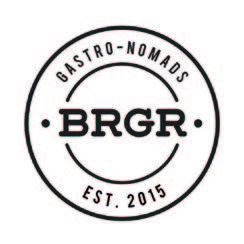
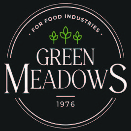
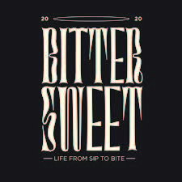

Map costs
See cost by product, branch, activity, and customer.
For business owners who deserve better numbers
Your revenue tells one story. Your bank account tells another. Growxcel closes that gap with cost visibility, pricing control, ERP-ready reporting, and profit decisions your team can act on.
The hidden cause
The problem is rarely one large expense. It is dozens of small decisions nobody can see together.
What Growxcel does
Not another report. A system your team uses to decide, act, and stay accountable.
See cost by product, branch, activity, and customer.
Price using the real cost to serve and required margin.
Turn SAP, Oracle, Odoo, or Dynamics data into decisions.
Give every KPI an owner, target, and review rhythm.
The transformation
The value is not more data. It is knowing which action protects margin today.
Documented outcome range
Ranges supplied in Growxcel's company profile. Results vary by engagement.
Up to, through visibility and control.
Up to, across stock and process.
Up to, through ownership and rhythm.
Up to, through cost-led decisions.
Proof
Verified outcomes from supplied Growxcel case studies.
Service costing, pricing correction, and SAP integration.
See the evidence →Route economics, workforce controls, and lower cash loss.
See the evidence →Branch economics connected to Dynamics 365 and POS.
See the evidence →Client network
60+ businesses where cost visibility directly affects margin, from restaurant groups to hospitals, industrial companies, and trading firms.







Your next decision
Start with a focused consultation. Leave with a clear map of the problem and the first actions to fix it.